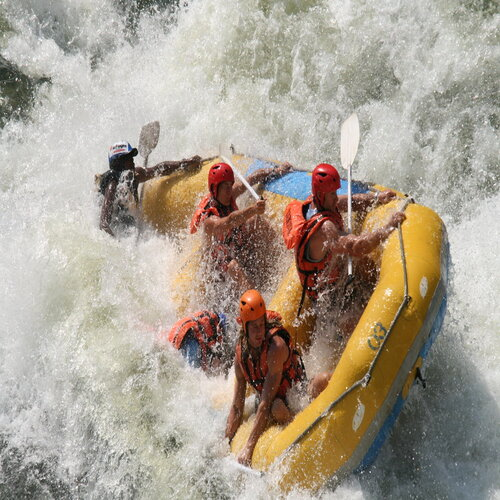
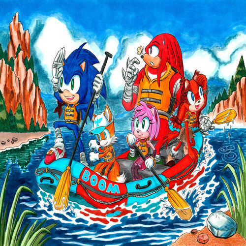

FAQ


Is this a good trip for kids?
Absolutely, this is a good trip for children of all ages. We have found however that children over the age of 8 seem to enjoy it more overall (And parents especially enjoy it more if their children are all over 8.)
Is whitewater rafting safe?
Whitewater Rafting goes above and beyond when it comes to safety precautions, ensuring you never hit the river without a helmet and personal flotation device or vest. In addition, we provide wetsuits for your protection and warmth. Our guides are experienced and accompany every trip out on Clear Creek.
What do I need to bring?
Typically, we will provide food and drink, all rafting equipment, etc., that you may need during your trip. Think of the items you'll need to bring as belonging to one of three categories things to wear on the river, things to wear after the trip, and items to take in the raft.